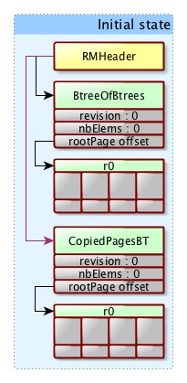
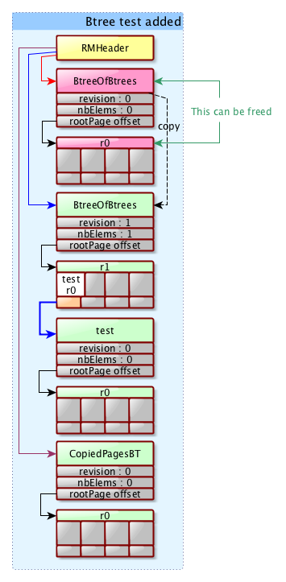
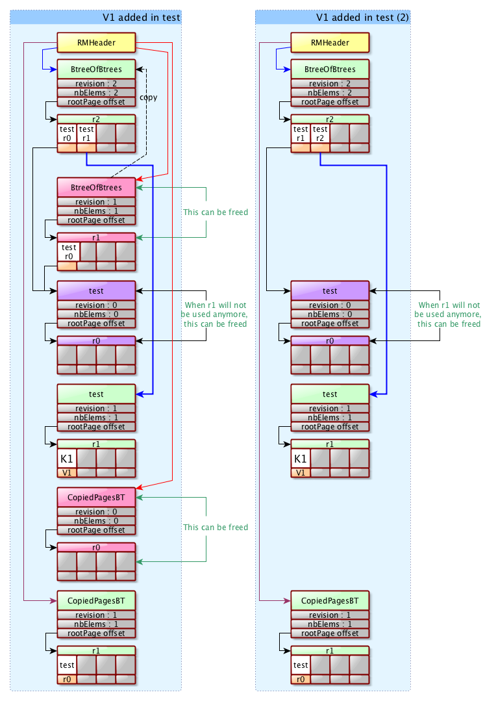

Mavibot 1.0
Downloads
Getting Started
Documentation
Support
Community
About Apache
7.4 - Updates
The update operations on a b-tree will modify the internal structure in many ways. We will expsoe the evolution of the mavibot file when dealing with the addition of a new b-tree and the insertion of a new value into it.
Note : we don’t show what’s happening to the CopiedPages b-tree here.
Initial state before the addition of a b-tree
Here is the content of the mavibot.db file before we add any b-tree into it :

As we can see, we just have a RMHeader pointing to the management Btree of Btrees and to the CopiedPages b-tree. nothing else.
Addition of a b-tree
Now, here is the file content after adding a new b-tree :

Here, the RMHeader is pointing to a new revision of the Btree of Btrees, which itself contains a reference to the test b-tree in its first revision. At this point, the old Btree of Btrees header and page can be freed and moved into the free pages list.
The CopiedPages b-tree remains unchanged.
Addition of an element in the test b-tree
Let’s go a step further : we now add an element to the test b-tree. This again will impact the test *b-tree, but also the Btree of Btrees and the RMHeader as shown in teh following picture :

The RMHeader is pointing to the second revision of the Btree of Btrees header, and a new revision of the test b-tree is stored in the root page of the Btree of Btrees. The test b-tree, whose header has been copied, now contains the V1 value, but we still have the first revision of the test b-tree present in the file and referenced by the Btree of Btrees, as some thread might be using it at the time of update.
We will be able to free the pages associated with the revision 1 of the test b-tree when no threads are using this revision. The old version of the Btree of Btrees can be freed too.
The CopiedPages b-tree will also be updated to contain the page that has ben copied (here, the test r0 root page). The RMHeader will point to the new CopiedPages b-tree header.
(the picture shows the same file twice, one while the first revision is still in use on the left, and another on the right where the first revision has been released)
Cleanup
When applying an operation on a btree, we need to first update the RMHeader so that it now points to the current b-trees.This is done in one single write of the RMHeader, where we update the pointers to the new Btree of Btrees and CopiedPages headers.
Post operation, we need to cleanup the pages that are now useless. This can’t be done before we have updated the RMHeader because we may lose some pages if we do so. For this reason, we have to keep a reference to the previous headers of those two management btrees (those that are to be freed).
We have first to clean the copied pages for the two management b-trees, and when it’s done, we can release the two headers of those b-trees.
Last, not least, we have to rewrite the RMHeader with pointers to the old b-trees set to NO_PAGE.
Recovering from a crash
This is a mandatory step : we must be able to get a working and clean file when a crash occurs, and it also must be fast. The idea is that at startup, we should always have a clean database, even if we have some lost pages, and we can proceed to a lost page recovery after the startup without impeding the server operations (except the updates).
There are many places where a crash can occur, and depending on the timing, different operations should take place.
Crash before the RecordManager header update
We will not be able to recover the pages that have been created before the RMHeader update. The only possible way would be to check the entire file to revover them as they won’t be pointed by no other data structure.
Otherwise, they are just lost page, they won’t create a problem.
Crash after the RMHeader update and before the cleanup
When we restart the database, if the RMHeader old pointers contains a value different from NO_PAGE, that means we have had a crash.
As we have a pointer to the old management b-trees in the RMHeader, we can reclaim the associated pages. All the old pages can be recovered from this point, as we have a revision for each of these pages. This covers :
- the test b-tree and its header
- the Btreeof Btrees and its header
- the CopiedPages b-tree and its header
All those pages are simply attached to the free page list.
When the cleanup is done, we can update the RMHeader by setting the old pointers to NO_PAGE.
The RecordManagerHeader
This page contains 4 pointers, two for each of the Btree of Btrees and the CopiedPages b-trees. The rational is that we should always be able to cleanup the file if we get a crash after the update of the RMHeader but before the end of the cleanup.
When we apply an operation, and before the cleanuo is done, we update the RMHeader to keep a track of the new and old references.
When the cleanup is done, we can set the old reference to NO_PAGE.
The NO_PAGE reference is a marker for a successful operation.
We also keep a pointer to the first free page of a list of free pages (see the next paragaphe).
Free page management
We use a list of free pages which is updated when we free a page or reclaim a new page. It’s a simple list where all the pages are linked together.
Everytime we need a free page, we get it from the the list, and we update the RMHeader to point to the next free page in the list (or NO_PAGE if we don’t have any remaining free page). This is a strain because it’s expensive to update the RMHeader for each free page we need…
ATM, there is no alternative, so we wil continue to update the RMHeader everytime we fecth a free page from the list, or every time we add a free page in the list.
Freeing a page is just a matter to make this page to point to the first free page, then to make the FreePage pointer to point to the freed page.